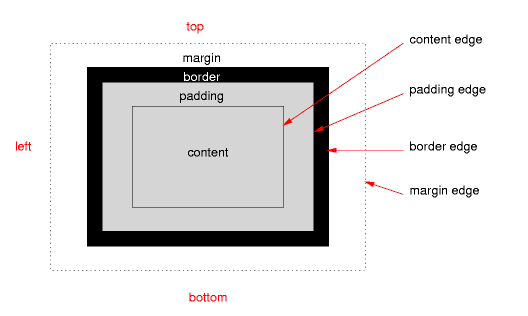

Objectives
In this lab, we introduce the box model and examine related properties: padding, margin, border, outline, width, height and overflow. We also look at the <div> and <span> elements in more detail.
The Box Model, padding and margins
CSS has the concept of a box model that essentially is a box that wraps around HTML elements. Each box has a content area (e.g. text, an image, a heading) and optional surrounding padding, border, and margin areas. This allows us to place a border around elements and space elements in relation to other elements. From the inside out it is ordered like so:
content -> padding -> border -> margin

So in our case anything in between our tags is the 'content'. Right after that comes the padding. Then there is a border and, finally, a margin. Margin and padding may seem like the same thing but if you think about it, you can see how being able to control the space before the border (padding) and after the border (margins) can really effect your layouts.
Padding
The CSS padding properties define the space between the element border and the element content. Padding is an inner, invisible border around your element.
Margins
The CSS margin properties define the space around elements. The margin clears an area around an element (outside the border). The margin is an outer, invisible border around your element. The default value for the margin properties is auto.

Specifying the Measurements
Which Unit is Best?
Question: Should we use pixels, ems or percentages?
Answer: It depends on how you want the design to behave.
- If you want the design to change with the browser window, then percentages is the way to go. The bigger the browser window; the bigger the padding or margin will become.
- If you want the design to scale well with different font sizes, then you should use ems, because the measurements will be based on the font size in their browsers.
- If you're after a precise design with graphical elements that line up exactly regardless of a browser window size or font setting, then setting sizes in pixels is the most reliable method of all. A pixel will always represent a single dot on the user's screen.
Specifying the Properties
We can use individual values such as padding-left; padding-right; padding-top; padding-bottom; margin-top; margin-bottom; margin-left; margin-right. Or we can specify the properties using the shorthand method (e.g: margin:2em;). We can specify 1 value, 2 values, 3 values or 4 values.
h1 {
padding: 10px;
}
/*The padding will be 10px on all four sides.*/
h1 {
margin: 10px 5px;
}
/*Top and bottom margin will be 10px, left and right margin will be 5px.*/
h1 {
padding: 10px 5px 15px;
}
/*Top padding will be 10px, left and right padding will be 5px, bottom padding will be 15px.*/
h1 {
border-width: 10px 5px 15px 20px;
}
/*Top border will be 10px, right border will be 5px, bottom border will be 15px, left border will be 20px.*/Borders
By default most HTML elements don't have a border but CSS gives you plenty of options to define one. You can place borders around any element you wish such as paragraphs, navigation areas, etc.
Border effects include:
- Various border styles.
- Different border thicknesses.
- A range of border colours.
The CSS properties we can use to achieve these effects are:
- border-style
- border-width
- border-color
Specifying a border
Setting the properties separately
When specifying a border, there are three properties that we can set: border-width, border-style and border-color. To specify these properties separately, the following CSS would be used:
.simpleblackborder {
border-width: 5px;
border-style: solid;
border-color: black;
}Setting properties together (the shorthand approach)
As we have seen, there are three CSS properties required for styling a border (border-style, border-width, and border-color). We can set up a border using just one property, instead of all three. The CSS for this would look as follows:
.container {
border: 5px solid black;
}Note: The default border is no border at all, so you need to specify the border-style property at all times. The values for border-style are: solid, inset, outset, ridge, groove, dotted, dashed, double. This example shows how each individual border appears on the screen.
Styling Individual Sides of an Element
You can style individual edges of the element using border-top, border-bottom, border-left, and border-right. Here's an example of a block that has different styles applied to each of its sides:
.multiborder {
border-top-width: 1px;
border-top-style: solid;
border-top-color: red;
border-bottom-width: 3px;
border-bottom-style: dotted;
border-bottom-color: blue;
border-left-width: 5px;
border-left-style: dashed;
border-left-color: yellow;
border-right-width: 7px;
border-right-style: double;
border-right-color: fuchsia;
}Border Radius
As an addition to CSS3, the ability to define border radius was added, effectively giving developers the possibility to make rounded corners on their elements. The CSS3 border-radius property allows web developers to easily utilise rounder corners in their design elements, without the need for corner images or the use of multiple div tags, and is perhaps one of the most talked about aspects of CSS3.
The border-radius property enjoys widespread browser support (although with some discrepancies) and, with relative ease of use, web developers have been quick to make the most of this emerging technology.
# example1 {
background-color:black;
color:white;
border-radius:15px;
width:50%;
padding:1em;
}<div id ="example1">
Here is an example of the border-radius property
</div>Outlines
We previously had a look at the border properties, which allows you to draw a border around an element. With the outline properties, you can get an extra border, for extra visual attention for your element. Take a look at the following Outline Example.
Differences between border and outline
From our first example, the border and outline properties may look identical, but there are actually a couple of pretty important differences:
- You cannot apply a different outline width, style and color for the four sides of an element, like you can with the border - the values provided will be used for all four sides of the element.
- The outline is not a part of the element's dimensions, like the border is, meaning that no matter how thick an outline you apply to the element, the dimensions of the element won't change. This also means that the browser won't reserve the required space for your outline - you will need to make sure that it can fit it, without overlapping other elements.
The outline property is a shorthand property, which translates into the outline-width, outline-style and outline-color properties.
As well as the solid outline style, there are quite a few Outline Styles to choose from (just like for borders): hidden, dotted, dashed, double, groove, ridge, inset and outset.
Outline offset
A cool thing about outlines is that you can create a distance between it and the border, if you want to, by using the outline-offset property. It takes a CSS length unit and the empty space between the border (if there is any) and the outline will be transparent and thereby take the background colour of the parent element.
body {
background-color:slategray;
}
.box {
background-color: #eee;
outline: 3px solid LightCoral;
outline-offset: 10px;
border: 3px solid black;
padding: 5px 10px;
width:80%;
margin:1em auto;
}The <div> and <span> elements
The <div> and <span> elements are both used for grouping other elements. They don't have any inherent meaning in themselves and don't immediately make your HTML page look any different. However, by using these elements, we can group other elements together for the purposes of layout and/or styling.
The <div> element
The <div> tag is a block element (i.e. it is automatically placed on a new line by the browser) and is used to group content such as paragraphs, headings, images and tables. It can be thought of as a container for other content.
The HTML and CSS to create and style a <div> would be something like the following:
This is how the code for the HTML page would look:
And the CSS would look like this:

The <span> element
The <span> element is an inline element (i.e. does not start a new line) and is used to group inline elements in a document. The <span> tag provides no visual change by itself, but provides a way to add some styles to a part of a text or a part of a document.
Span example:
<p>My mother has
<span style="color:blue;font-weight:bold">blue</span>
eyes and my father has
<span style="color:darkolivegreen;font-weight:bold">dark green</span>
eyes.
</p>Result of the above code:
Width and height
All elements on a webpage have dimensions. Sure, you don't have to specify them, thanks to the fluid layout model used by default - elements take up the space they need, and if there's not enough room for them, they are automatically pushed into a direction with more available space. This all happens thanks to the fact that the width and height properties of an element is set to "auto" by default, meaning that the element will automatically expand or subtract depending on the content within it.
You should be aware of the difference between inline and block elements, when it comes to dimensions, because they will behave differently: By default, an inline element will only consume the vertical and horizontal space needed to fit the content. A block element, on the other hand, will use all of the available horizontal space but only the vertical space needed to fit the content. Therefore, only block level elements can have custom widths and heights specified as illustrated in the following example.

If you try out this example, you can see how the first box uses all available horizontal space, while the second box only use the 100 pixels we assign it in both directions. Div elements are by default block level elements. Note that I have only specified width and height for box1 as auto to illustrate the difference - these are already the default values, so they may be omitted.
The last element is a span tag, which is by default an inline element and as you can see, it only uses the space actually required. You could try assigning a width and a height to it, but the browser would ignore it - only block level elements can have custom widths/heights.
Relative and absolute width/height
We already saw how we could define widths and heights as an absolute value, in pixels, but that is just one of many options. The width and height properties can take either a length or a percentage value, meaning that you can use both absolute values (as we did with pixels) or relative values, either as a percentage of the available space or relative e.g. to a font size (i.e. the em unit ).
In this example, we will see how we can use percentage values to take up a relative share of the available space.
#parent-box {
width: 300px;
height: 300px;
}
#box1 {
width: 25%;
height: 75%;
}
#box2 {
width: 75%;
height: 25%;
}<div id="parent-box" style="background-color: CornflowerBlue;">
<div id="box1" style="background-color: GreenYellow;">
Box 1<br>
Some content....
</div>
<div id="box2" style="background-color: Salmon;">
Box 2<br>
Long text is automatically wrapped, if needed...
</div>
</div>In this example, we have a box with an absolute size acting as a parent box, and inside of it, we have two smaller boxes, which uses a relative amount of the available parent space, just to show you how easy it is to do.
The overflow property
A block level element in CSS will, by default, take up all the horizontal space as well as all the vertical space it needs to fit the content inside of it. However, what happens if we define a vertical size that is not enough to contain the content?
Look at the following example and you will soon realise an important thing: whenever you decide to set a fixed height on an element, you are responsible for making the content fit, and if it doesn't, it will simply "fall out" of its container. Obviously, you wouldn't notice it in this example if it wasn't for the distinct background colors (the green box on the white background), but it's still a very real problem that you will likely face as soon as you try to limit the size of your elements.
#box1 {
width: 100px;
height: 100px;
}<div id="box1" style="background-color: GreenYellow;">
Some content....
More content...
There's probably not enough room for it in this tiny box...
</div>With a little help from the overflow property, you can control what happens when an element has larger content than it can actually fit. There are several possible values and each of them will make your element behave differently when deciding what to do with overflowing content. The overflow has, per the current specification, four possible values:
- visible
- hidden
- scroll
- auto
Now look at the following example.
The default is visible, which is the behaviour we saw in the previous example - the content simply just expands beyond the border of the container.
For the second box, we use the hidden value. This will cause content which expands beyond the borders to simply be hidden, making it invisible to the end-user. This can be practical in some cases, but in the case of a long text not fitting into an absolutely sized element, you would likely prefer the auto or scroll value.
The auto value, used on the third box, leaves it up to the browser how to handle the problem. Most browsers, at least desktop browsers, will handle overflow by adding scrollbar(s) if necessary. This is very often the value you will prefer, because it allows you to have an absolutely sized element and then only have scrollbars rendered if the content actually overflows.
At last, we have the scroll value. Most desktop browsers will handle this value by adding vertical and/or horizontal scrollbars to the element, if content overflows. Scrollbars are often what you desire, but with this value, most browsers will force scrollbars upon your element, no matter if the content overflows or not - for this reason, the auto value is usually preferred.
Exercise
The goal is to create a webpage that looks like the screenshot below. It will involve using borders, margin, padding, width, height, and overflow. Download lab01.zip and unzip it into your Week 7 folder.
On the index.html page:
Create a div for all of the page content and assign it an id called 'container' (i.e. <div id="container">).
In the style.css file
container div styles
- Centre the container div in the middle of the page.
- The container div should be 60% wide.
- Background colour is light yellow.
- Border is solid brown and 3px.
- Padding of 1em on all sides.
- The border radius is 5% on all sides.
image styles
- The picture has a width of 99%.
- Height is auto.
- Border is inset orange and 4px.
text div styles
- 80% wide.
- 200px high.
- Centered inside the parent div.
- Background colour is light yellow.
- Top margin of 1em.
- Padding (Top and Bottom: 0; Left and Right: 1em;)
- Border is dashed orange and 6px.
- Text is justified.
- Overflow is handled automatically.
important span styles
- Font weight is bold.
- Font style is italic.